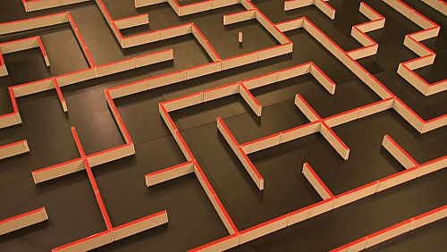
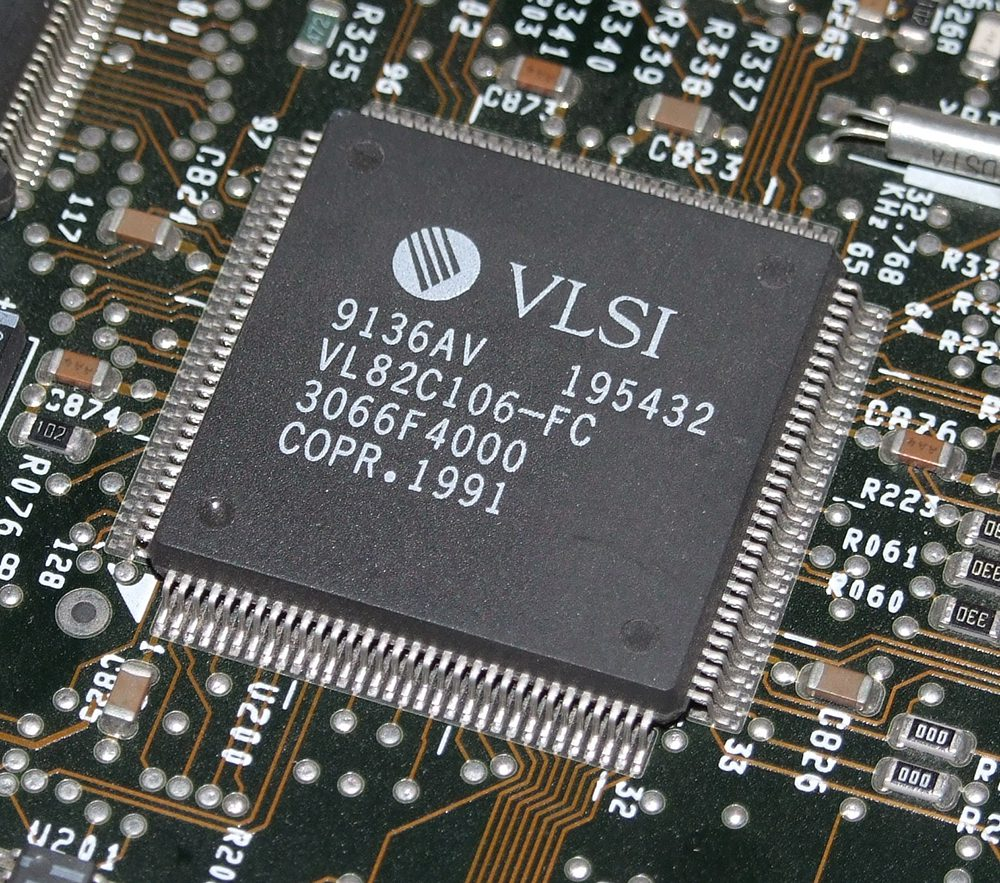
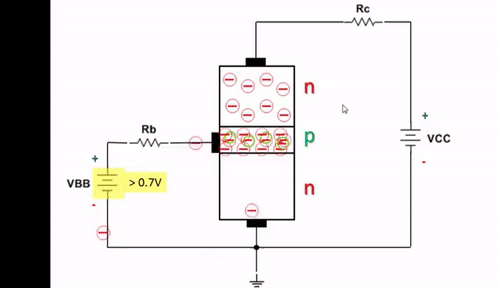
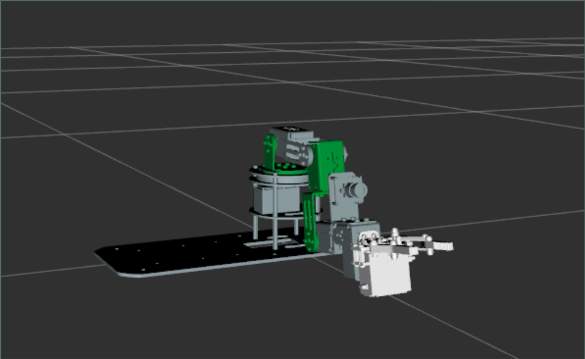
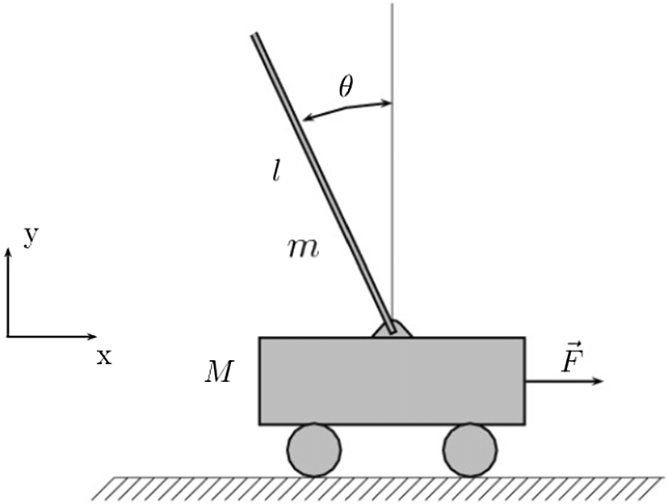
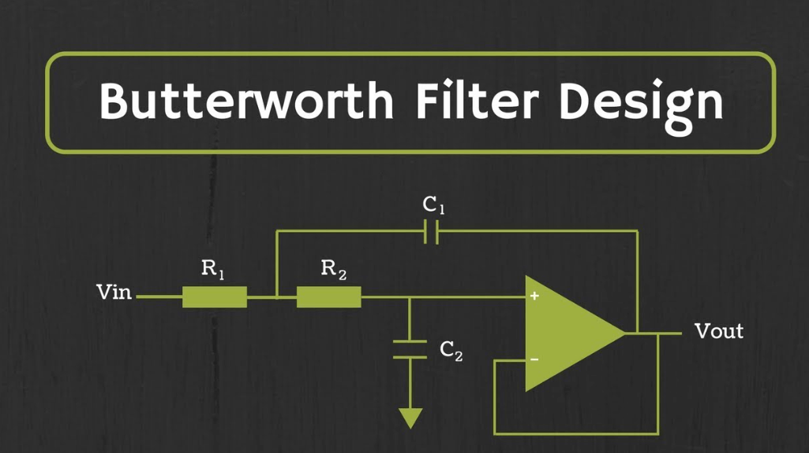

Micromouse Image'">
Micromouse Robot
VLSI Cache Image'">
VLSI Cache Design
BJT Amplifier Image'">
BJT Audio Amplifier

MXene DFT Research
Dofbot Image'">
Dofbot Differential Camera Robot
Inverted Pendulum Image'">
Inverted Pendulum Control

Kalman Filter Implementation
FPGA Processor Image'">
FPGA Processor Design
Noise Filter Image'">
Digital Noise Filter (MATLAB)

MLS Timing Control Unit